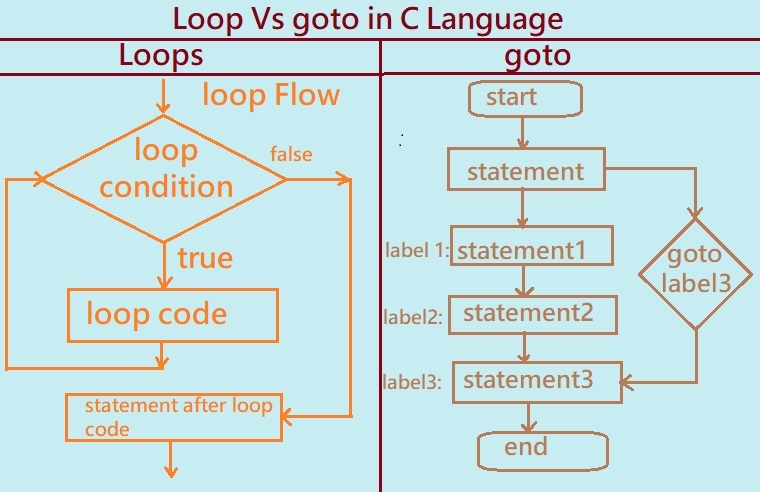

Goto Statement in C:
The goto statement lets you jump to another part of the program using a label. It can be useful in some situations, but it should be used carefully.
Main Points:
1. It can be used instead of loops like while and for in some cases.
2. It may help speed up the program by making the flow simpler in certain situations.
3. You can use it to exit from many nested loops without writing multiple break statements.
4. It allows jumping to any part of the program either above or below the current line.
5. Using goto too much can make the code hard to read and understand.
It’s best to use goto only when there’s no better option, especially in simple programs or system level code like embedded systems or robots.
Understanding the Difference Between Loops and Goto Statement in C Programming
Loop Statements:
Loops are used to go through a collection of items, like arrays or lists. They're one of the most common tools in programming because they help us repeat tasks easily.
1. Loops let you run the same block of code for each item in a list or set of data.
2. They simplify code, making it easier to solve problems without writing the same thing over and over.
3. This also helps reduce mistakes and keeps your code cleaner and shorter.
4. Loops give you control over how many times code runs, which is useful in many situations.
5. They're especially helpful when working with large datasets or when you need to process lots of information without making the code more complex.
6. You can use loops for simple things like printing numbers or for more advanced tasks like processing user input analyzing data or working with sensors in robotics.

Understanding the Difference Between Loops and Goto Statements in C Programming
The diagram below shows the main differences between a loop and a goto statement in C programming. Let’s explore both step-by-step to see how they work and when to use them.
1. Loops in C
Loops let you repeat a block of code multiple times. Think of it like a washing machine cycling through clothes again and again until the job is done. In programming, loops run as long as a certain condition is true.
Loops are control statements that help you repeat instructions until a condition changes.
In C, there are three main types:
for loop
while loop
do-while loop
Programmers use loops to keep their code clean and efficient, especially when they know how many times the loop should run or want to run it until something changes.
How Loops Work (Based on the Flow Diagram):
1.The program checks the loop condition.
2.If true, it runs the code inside the loop.
3.After running the code, it goes back to check the condition again.
4.This repeats until the condition is false.
5.Then, the program moves on to the code after the loop.
2. Goto Statement in C
The goto statement is like a shortcut that jumps your program directly to a labeled spot in your code.
It skips everything in between without checking any conditions.
While simple, using goto can make your code confusing and harder to follow.
That’s why modern programmers avoid it except in some special cases like breaking out of nested loops or handling errors.
Using too many goto statements can make your code confusing and messy which makes it hard to follow and fix.
How Goto Works (Based on the Flow Diagram):
1. The program starts and runs some statements.
2. When it hits a goto label3; it jumps straight to label3.
3. This skips any code between the jump and label3.
4. If you then use goto label1; after label3 the program jumps back to label1, causing an infinite loop.
Warning: Avoid creating infinite loops with goto as it can crash your program or cause unexpected behavior.
In summary, loops are a clean structured way to repeat code, while goto is a more direct but risky jump command.
Understanding when and how to use these can help you write better C programs.
Loops are a key part of programming in C. They let you repeat actions multiple times without writing the same code over and over.
This simple program shows how a while loop prints numbers from 1 to 10.
C Program to Demonstrate a While Loop
/* The program prints numbers from 1 to 10 */ #include<stdio.h> int main() { int i = 1; while (i <= 10) { printf("\n%d", i); i++; } return 0; }
Output: 1 2 3 4 5 6 7 8 9 10
How It Works:
The program starts by declaring an integer variable i and setting it to 1.
Then it enters the while loop, which keeps running as long as the condition i <= 10 is true.
Inside the loop, the current value of i is printed, and then i is increased by 1 with i++.
This process repeats — checking the condition, printing, and incrementing — until i becomes 11.
At that point, the loop stops and the program ends with return 0;.
Understanding how loops like the while loop work is essential for writing efficient and clear C programs.
Practice writing your own loops to get comfortable with this fundamental concept.
C program to illustrate use of loop using goto statement
/* C program given below displays series of number 1 ,2,3.....10 using goto statement*/
#include <stdio.h>
int main() { int c=1; /*define and initilize counter c=1 */ int range; /* enter the value for range */ printf("Enter the any value for range: "); scanf("%d",&range); //define label BEGIN BEGIN: printf("%d ",c); c++; //increment counter / * validate condition & use the goto statement */ if(c<=range) goto BEGIN; return 0; }
Output: 1 2 3 4 5 6 7 8 9 10
Explanation :
This simple C program prints numbers from 1 up to a number you enter, using the goto statement to create a loop.
Here’s how the program works step by step:
1. It starts by declaring two integer variables: c a counter set to 1 and range which will store the user’s input.
2. The program asks you to enter a number by displaying a message and then reads your input.
3. The label BEGIN: marks the start of the loop.
4. It prints the current value of c.
5. Then it increases c by 1.
6. It checks if c is still less than or equal to range. If yes the program jumps back to the label BEGIN: repeating the steps.
7. When c becomes greater than range the loop ends and the program finishes.
Example Output: If you enter 10 the program will display: 1 2 3 4 5 6 7 8 9 10.
This example shows how the goto statement can be used to repeat code by jumping to a specific label. While it works, modern programming usually prefers loops like for or while for clearer and easier to maintain code.
Previous Topic:-->> Difference Between while and do while loop in C || Next topic:-->>While loop assignments in C.
Other Topics:
Other Topics
SQL Interview Questions Java Control Flow and Loops Interview Questions Top SQL Interview Questions Python Loops Interview Questions Banking Case Study in SQL C language Function FAQ SQL Joins Interview Questions SQL Index FAQ Normalization FAQ SQL Subqueries FAQ Java OOps Interviw Questions Python FAQ Python Generator Iterator FAQ